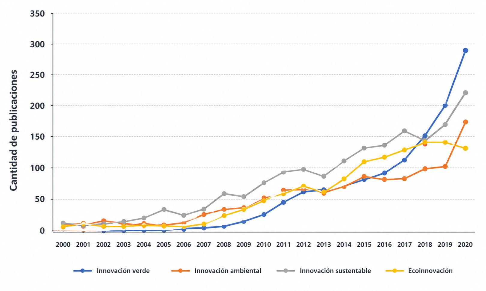

La tecnología verde engloba un conjunto de prácticas tecnológicas que tienen como objetivo principal promover la sostenibilidad y reducir el impacto ambiental. Consiste en la aplicación de innovaciones tecnológicas y la gestión responsable de recursos informáticos para así sumar al bienestar del planeta.
Abarca desde la disminución de la utilización de recursos naturales en la fabricación hasta la adecuada disposición de los residuos. Uno de sus objetivos es reducir la huella de carbono, es decir, las emisiones de CO2, mediante la adopción de energías limpias y soluciones que promuevan la eficiencia y ahorro energético. Además, busca minimizar el uso de agua en las operaciones diarias de la compañía y llevar a cabo una gestión adecuada de los residuos sólidos, como el reciclaje del papel, la correcta disposición de los residuos electrónicos, la recolección de materiales reciclables y la reutilización de los residuos de la producción, entre otras medidas.
Por su parte, la UNCTAD (Conferencia de las Naciones Unidas sobre Comercio y Desarrollo) pide a los gobiernos y comunidades empresariales que fomenten el desarrollo de habilidades técnicas y aumenten las inversiones en la infraestructura tecnológica requerida para el crecimiento de las industrias verdes.
Para apoyar esta evolución, el Informe sobre Tecnologías e Innovación 2023, realizado por Naciones Unidas, insta a la comunidad internacional a hacer que las normas comerciales mundiales apoyen más las industrias sostenibles emergentes en las economías en desarrollo y a reformar los derechos de propiedad intelectual para facilitar la transferencia de tecnología a estos países.
Un dato relevante, obtenido a partir del análisis de la frecuencia de estos términos en publicaciones científicas recopiladas en Google Académico desde el año 2000 hasta 2020, señala una tendencia significativa. A partir del año 2009, se ha observado un aumento sostenido en la utilización de estos términos en la literatura científica. Además, se observa que «innovación verde» es el término más predominante en los últimos cinco años, con un crecimiento especialmente rápido, representando el 36% de las publicaciones (artículos de revistas y congresos) indexadas en Google Académico en 2020.
